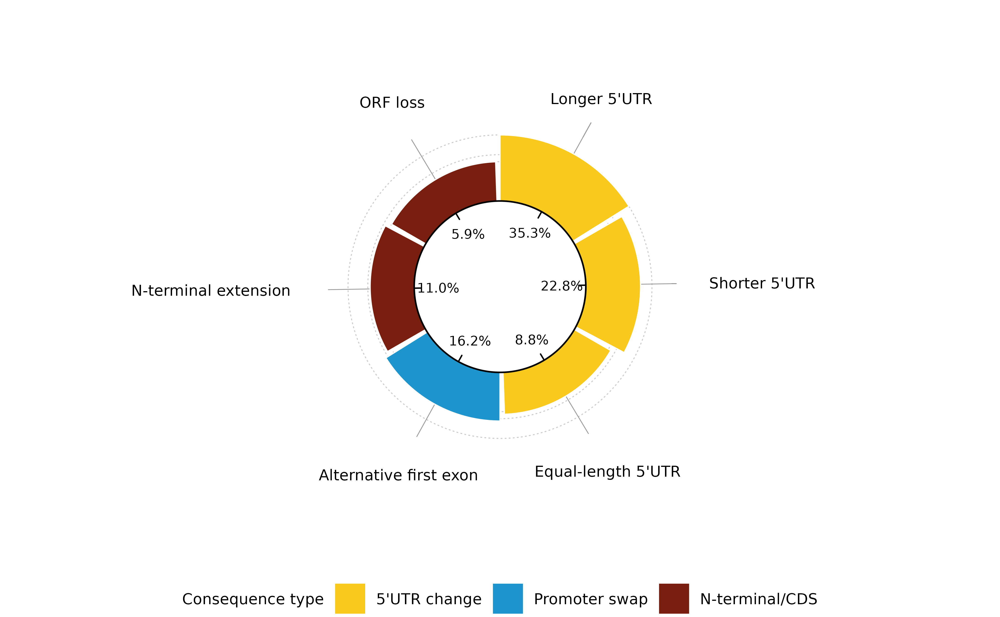
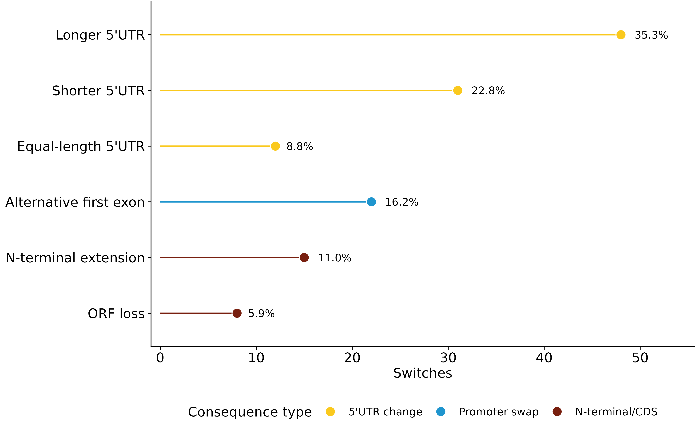

Visualises how a set of start-site switches divides among consequence classes. Four styles are available; the donut is the default and is the one the package's house design was built around.
Usage
plot_consequence(
x,
style = c("donut", "bar", "lollipop", "stacked"),
by = c("subtype", "category"),
filter = NULL,
palette = NULL,
title = NULL,
base_size = 10,
base_family = "",
inner_r = 0.24,
bar_range = c(0.11, 0.185),
gap_deg = 2,
start_deg = 90,
show_percent = TRUE,
show_n = FALSE,
show_guides = TRUE,
legend_position = "bottom"
)Arguments
- x
A data frame from
classify_consequence()orconsequence_summary(). A raw classified table is summarised automatically.- style
"donut","bar","lollipop"or"stacked".- by
"subtype"or"category".- filter
An optional expression evaluated in
xto subset rows, for exampleboth_full_length == 1.- palette
Named vector of category colours, or
NULLfor the default.- title
Plot title, or
NULL.- base_size
Base font size in points.
- base_family
Font family for every piece of text in the figure. The empty string uses the graphics device's default. Text geoms do not inherit a theme's family, so this is threaded to each of them explicitly.
- inner_r
Inner radius of the ring, in the plot's arbitrary units.
- bar_range
Length-2 numeric giving the minimum and maximum bar height.
- gap_deg
Angular gap between sectors, in degrees.
- start_deg
Angle at which the first sector begins; 90 puts it at the top.
- show_percent
Print each sector's share inside the ring.
- show_n
Append the raw count to each external label.
- show_guides
Draw the dotted magnitude guide circles.
- legend_position
Where to put the category legend.
Geometry of the donut
The \(n\) subtypes each occupy an equal angular sector of
\((360 - n g)/n\) degrees, separated by a gap of \(g\). A sector's inner
radius is fixed at inner_r; its outer radius is
\(r_i = r_0 + h_i\) with the bar height \(h_i\) scaled linearly from the
counts,
$$h_i = h_{\min} + \frac{n_i - \min n}{\max n - \min n}(h_{\max} - h_{\min}).$$
So the radius encodes abundance while the angle is constant - which is the
point of the design, since equal angles keep every label legible regardless
of how rare its category is.
Examples
d <- data.frame(
category = c(rep("5'UTR change", 3), "Promoter swap", rep("N-terminal/CDS", 2)),
subtype = c("longer", "shorter", "equal", "alt first exon",
"N-term extension", "ORF loss"),
n = c(48, 31, 12, 22, 15, 8)
)
plot_consequence(d)

plot_consequence(d, style = "lollipop")
